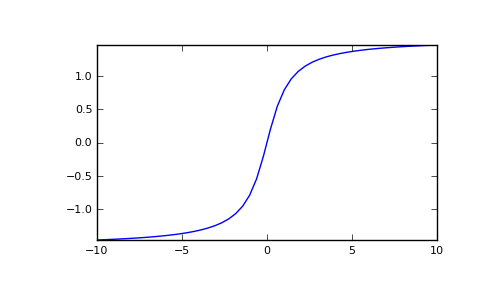

numpy.arctan¶
- numpy.arctan(x[, out]) = <ufunc 'arctan'>¶
Trigonometric inverse tangent, element-wise.
The inverse of tan, so that if y = tan(x) then x = arctan(y).
Parameters : x : array_like
Input values. arctan is applied to each element of x.
Returns : out : ndarray
Out has the same shape as x. Its real part is in [-pi/2, pi/2] (arctan(+/-inf) returns +/-pi/2). It is a scalar if x is a scalar.
See also
Notes
arctan is a multi-valued function: for each x there are infinitely many numbers z such that tan(z) = x. The convention is to return the angle z whose real part lies in [-pi/2, pi/2].
For real-valued input data types, arctan always returns real output. For each value that cannot be expressed as a real number or infinity, it yields nan and sets the invalid floating point error flag.
For complex-valued input, arctan is a complex analytic function that has [1j, infj] and [-1j, -infj] as branch cuts, and is continuous from the left on the former and from the right on the latter.
The inverse tangent is also known as atan or tan^{-1}.
References
Abramowitz, M. and Stegun, I. A., Handbook of Mathematical Functions, 10th printing, New York: Dover, 1964, pp. 79. http://www.math.sfu.ca/~cbm/aands/
Examples
We expect the arctan of 0 to be 0, and of 1 to be pi/4:
>>> np.arctan([0, 1]) array([ 0. , 0.78539816])
>>> np.pi/4 0.78539816339744828
Plot arctan:
>>> import matplotlib.pyplot as plt >>> x = np.linspace(-10, 10) >>> plt.plot(x, np.arctan(x)) >>> plt.axis('tight') >>> plt.show()
(Source code, png, pdf)

{kind=link}